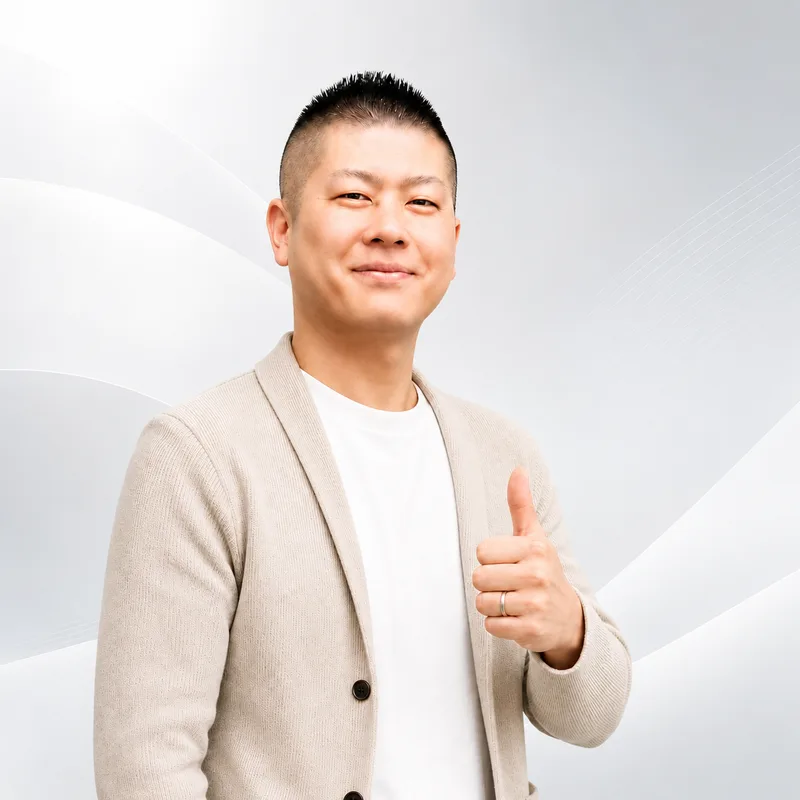

コンサルタントではなく、現場の伴走者として。
「AIが生み出す時間で、顧客体験を豊かにする。」
屋号の BuildMate（建てる・つくる ＋ 仲間・伴走者）には、外から正解を教えるのではなく、同じ目線で現場の仕組みを一緒につくり直すという想いを込めています。


木村 拓隆
Kimura Hirotaka / AI活用伴走パートナー
現場で結果を出してきたから、
「生きた業務改善」が描ける。
私はもともと、プログラミングやITの専門家としてキャリアを始めたわけではありません。営業・販売の現場からスタートし、住宅・建築業界では約12年、施工管理として約1,200現場を完工させ、その後に移った建設業向けクラウドシステム（SaaS）企業では200社を超える工務店・住宅会社の導入支援に携わってきました。どの現場でも私がただ一つ貫いてきたのは、自分の都合ではなく、お客様・職人さん・現場で働く仲間という「他者優先」を徹底することでした。
多くの現場とIT導入の両方を経験する中で、ずっと感じてきたことがあります。それは、「機能として優れたシステム」と「1分1秒ごとに状況が変化する現場の実務」の間には、目に見えない大きな隙間があるということです。どれほど論理的で正しい仕組みであっても、天候や段取りが刻々と変わる生きた現場では、理論通りにはいかない場面が必ず出てきます。「現場から疲れて帰ってきて、ここまで細かい項目を入力するのは難しい」——そうした小さなズレから、せっかく導入したシステムが定着しなくなってしまう姿を数多く見てきました。
だからこそ私は、現場とシステムの「翻訳者」になるために、実務家である自分自身が、生成AIをはじめ、Google自動化（GAS）、各種公開APIを用いた外部データ連携、kintoneやCRM等の既存ツール連携、さらにはAIエージェントや業務特化型Webアプリの独自開発までの技術を身につけました。裏側の仕組みは高度なAPI連携やAIでしっかりとつなぎながら、現場の人が触る画面は「迷わず・負荷なく使えること」。それが実務を経験してきた私の設計基準です。
そしてもう一つ、私が大切にしているのは「いきなり社内を大きく変えようとしないこと」です。新しい仕組みを入れるとき、現場から戸惑いや慎重な声が出るのは当然のことです。私は現場の苦労を知っているからこそ、変化に慎重な方々を否定するのではなく、日々の業務負荷を最小限に抑え、まずは「これならできた！」「本当にラクになった！」という小さな成功体験を一つずつ積み重ねてもらうことから始めます。
「他者優先」の目線で、社内の不安や抵抗感とも自然に共存しながら、気づけば現場全体が自分たちの力で回せるようになっている。事務作業で削られていた時間を、お施主様への誠実さと、社長が未来を描く時間に取り戻す。それが、実務を生き抜いてきた私だからこそできる「伴走」のかたちです。
BuildMateのご支援を支える「3つの経験」
住宅・リフォームの施工管理および関連業務として約1,200現場を経験。現場監督や職人の忙しさ、書類作成の詰まりどころを実体験として理解しています。
建設業向けSaaS企業にて、200社を超える工務店・住宅会社のシステム導入支援に携わりました。「なぜ現場に定着しないのか」の原因と対策を熟知しています。
住宅・建築業界約12年の実務知見に、生成AIやGAS、公開API・既存SaaS連携、Webアプリ開発を掛け合わせ、現場に合う仕組みを実装します。
ご支援で大切にしている3つのこと
現場のリアルに合わせて設計する
機能や理屈を優先するのではなく、「1分1秒変化する現場」の忙しさと日々の実務の流れを最優先にします。裏側ではAIや公開API・システム連携を駆使しながら、実際に使う人にとっては一番シンプルで負担のない「生きた仕組み」に落とし込みます。
「できた！」の小さな体験を積み重ねる
いきなり大きく変えません。現場の苦労を知っているからこそ、新しい変化に慎重な社員様の気持ちも分かります。正論で押し切るのではなく、日々の業務負荷を気づかう小さな改善から始め、「これなら使える」「ラクになった」という実感を一つずつ積み重ねて定着させます。
支援終了後も自走できる環境を残す
徹底した「他者優先」で、自分の得意なツールを売り込むのではなく「相手（御社のスタッフ様と、その先にいるお施主様）にとって何が一番良いか」を常に基準にします。支援が終わったあとも、ブラックボックスにならず自分たちの力で回し続けられる仕組みを残します。
事業概要
| 屋号 | BuildMate（ビルドメイト） |
|---|---|
| 代表 | 木村 拓隆（きむら ひろたか） |
| 拠点・対応エリア |
兵庫県（関西圏訪問・全国オンライン対応） ※兵庫県・大阪府など関西圏は対面での訪問伴走にも対応しております。全国の工務店・企業様へGoogle Meet / Zoom等でのオンライン支援を提供しています。 |
| 事業内容 |
|
| 対応技術・ツール | ChatGPT / Claude / Gemini / Claude Code / Codex / MCP / 各種公開API連携 / Google Workspace（スプレッドシート・フォーム・Gmail・GAS）/ kintone・LINE API・Chatwork連携 / 業務Webアプリ設計・開発 ほか |
| 採択・資格 |
・兵庫県「起業家支援事業（一般事業枠）」採択（2026年9月） ・生成AIパスポート（生成AI活用普及協会） |
まずは、御社の現場のお話を聞かせてください
「何から手をつければいいかわからない」という段階でのご相談が一番多いです。無理な勧誘は一切いたしませんので、お気軽にお声がけください。